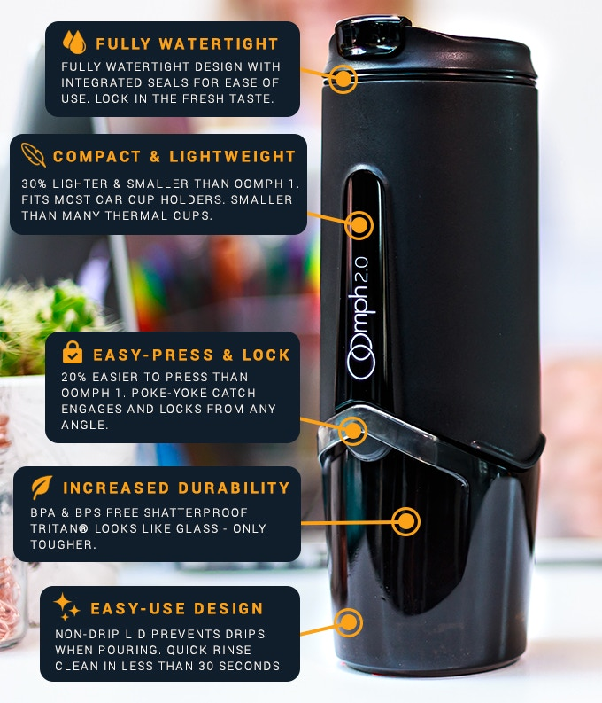

New Oomph 2.0
PROS |
CONS |
|---|---|
| Great Coffee on the Go | Doesn't Keep Coffee Hot for long |
| Simple to Maintain | Hard to press |
| Durable | Hard to get consistant results |
 This week I tried the new Oomph. this is a handy portable coffee brewer for coffee lovers that want that French press style brew on the go. I tried it for a full week.
If you are like me and like have multiple coffee subscriptions and love trying out new roasts and exotic beans, this is the item for you ! the convienence of the device is something that I have been linging for, for quite some time.
No more being late for work because you were brewing a fench press, with Oomph's start of the art brewing mechanism, you can pour in the water, let it brew in the car and then extract finish the breew on your way. the coffee wont over extract as the coffee is seperated from the grinds once filtered through, Genius !